徳島県山中に位置する、国内トップクラスの秘境駅・前編 < 坪尻駅・徳島県三好市池田町 >
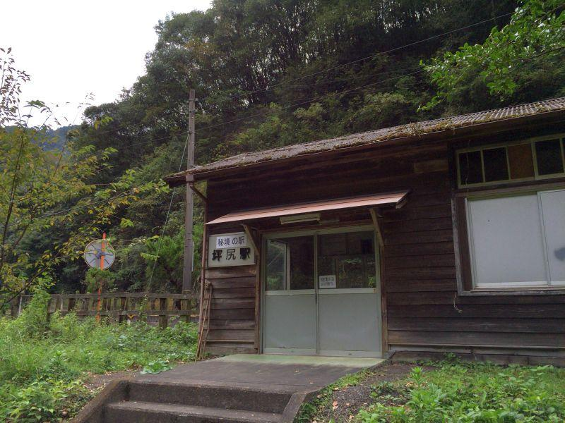
四国の風景と言えば、海やそこに浮かぶ島々が思い浮かびます。
けれどそれは 沿岸部分だけで、四国の面積の約80%は山林。実に4分の3近くが山や森林に覆われた部分であり、海の風景は 四国のほんの一部に過ぎません。
四国四県の中で 徳島県も、一見「鳴門のうずしお」に連想されるように 海のイメージがありますが、実態は山深く 海と接していない市町村で暮らしている住民が多い。
そんな徳島の山奥。
こんな場所に？この道を行くの？利用者は誰？
疑問ばかりが湧いてくる場所にある 鉄道の駅。「秘境駅」として名高いこの駅は、国内トップクラスとも称されるロケーションに存在します。
坪尻駅への入口
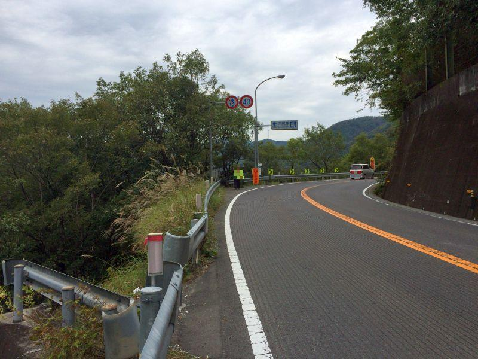
その秘境駅へ 自家用車でアクセスするためには、この場所へやってきます。
道路は国道32号。香川県側から来た場合、阿讃國境(徳島/香川県境)を分ける「猪ノ鼻峠(猪ノ鼻トンネル)」を越え、少し下った地点になります。
※ 写真は手前が徳島県側・奥が香川県側
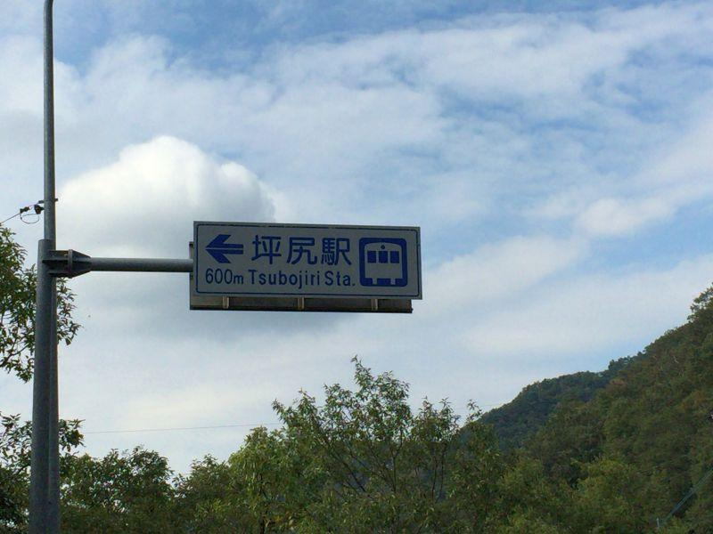
国道上に「坪尻駅」の案内板。
特に気を留めていなければ気が付きませんが、
「←坪尻駅600m」
結構遠いことがわかります。
駅はこの場所から見えませんし、駅前へアクセスする車道も見当たりません(後述)。
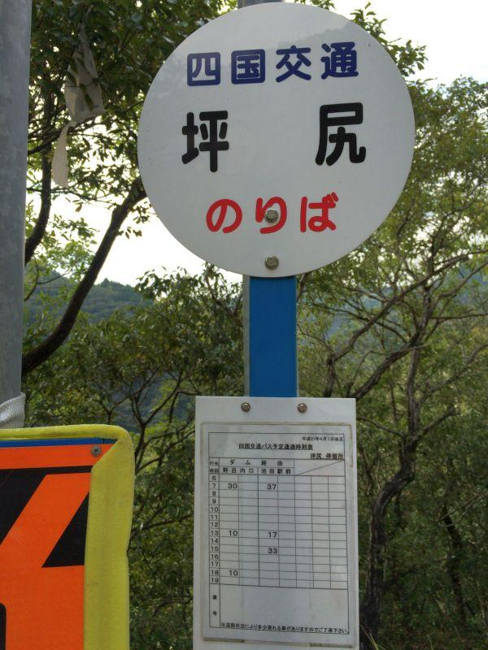
坪尻駅入口地点へは、阿波池田駅に発着している 路線バスで来ることも可能。
四国交通野呂内線(しこくこうつう のろうちせん)→ バス時刻表
箸蔵寺へのアクセス手段である 箸蔵ロープウェイ前まではそれなりに便数がありますが、そこから坪尻駅を含む末端区間へは、一日3往復。利用する場合は、事前に計画してから乗車するようにしましょう。
自家用車でのアクセスですが、国道32号上に路肩が少し広い場所があり、そこへ2・3台車を停めることができそうなスペースがあります。
ただ、そこが駐車して良い場所かわかりません。また 付近には歩道・横断歩道が存在しないため、国道上を横断しなければならず、安全確保と法律面で疑問があります。自家用車・バイクをこの付近に駐車して 坪尻駅を訪問される場合は、各自の判断で行われるようになさって下さい。
え？これ！？
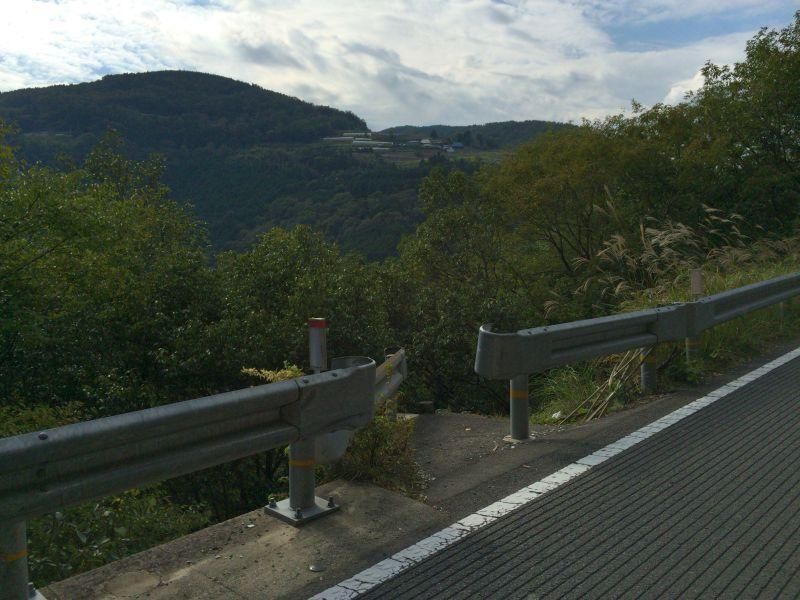
では、坪尻駅へ向かいましょう。
え？
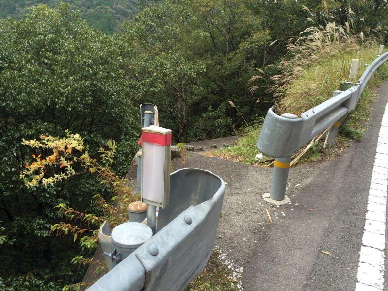
これ！！
そうです、ガードレールの割れ目が 坪尻駅への入口。駅へ向かう人・列車を下りて駅から来た人のために、隙間が設けられています。
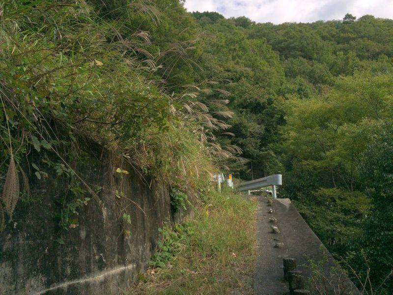
進入して少し先から振り返ったところ。
入口は狭いけれども その先は広い... ということもなく、坪尻駅を示す看板は 先ほどの国道上にある看板のみ。本当に道が正解なのか 不安しかありませんが、坪尻駅へはこの道で合っています。
ただ、下りは20分前後。駅から登ってくる場合もう少し時間がかかります。
竹藪、雑木林の駅アクセス路
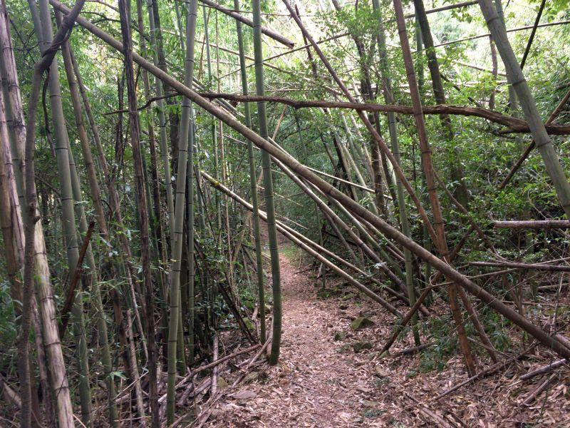
この通り、駅へのアクセス路に街灯は一つも無いので、各季節 日没時間を確かめてから進むようにしましょう。
夏は陽が暮れると、より虫が出ますし 動物も出没します。冬はいきなり真っ暗になります。
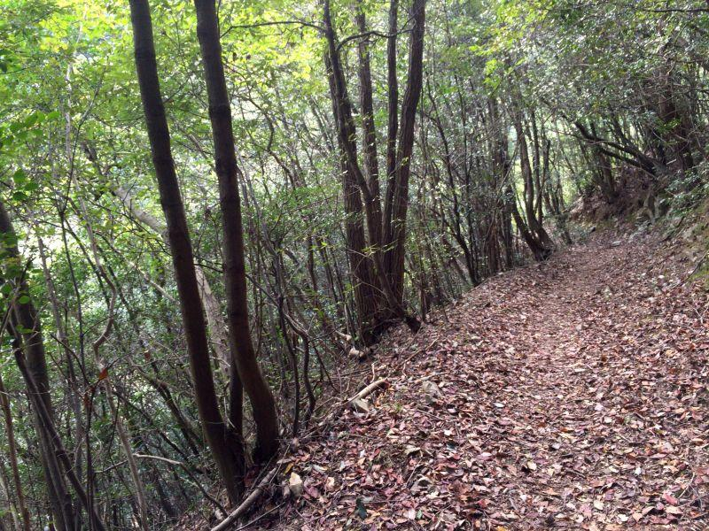
所々 谷側が崖になっているので、歩行に注意が必要。歩き易い靴は必着です。
ここも崖側に木が生えて 根を張っていなければ、道は無くなっていることでしょう。
坪尻駅の立地
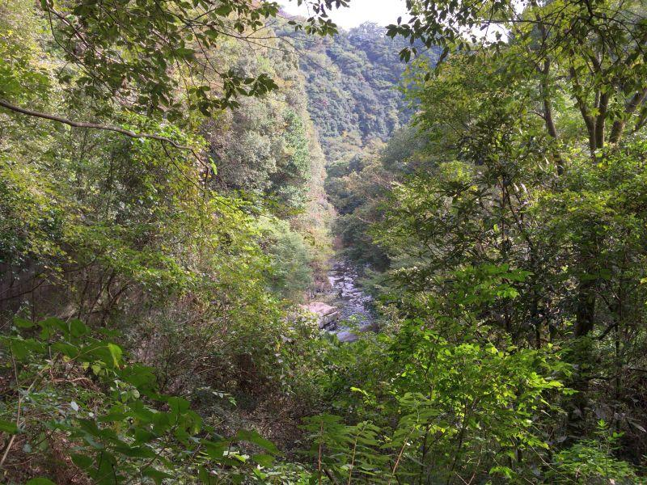
木々の切れ目から 鮎苦谷川(あゆくるしだにがわ)が、チラチラ見えます。
元々 こちらの川が流れていた場所に導水管を設置して 川の流れを保ちつつ、盛り土を行って鉄道の路盤を整備した... というのが、坪尻駅の立地。
列車が来るとこの谷間一帯にエンジン音が鳴り響く様子は、姿が見えなかったとしても 力強さと迫力を感じるには十分です。
幽霊が出そうな...
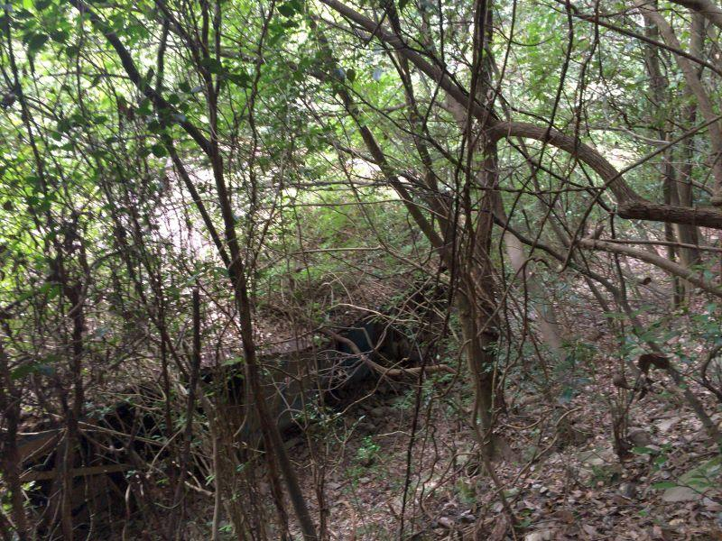
この廃屋が見えてきたら、坪尻駅は近い。
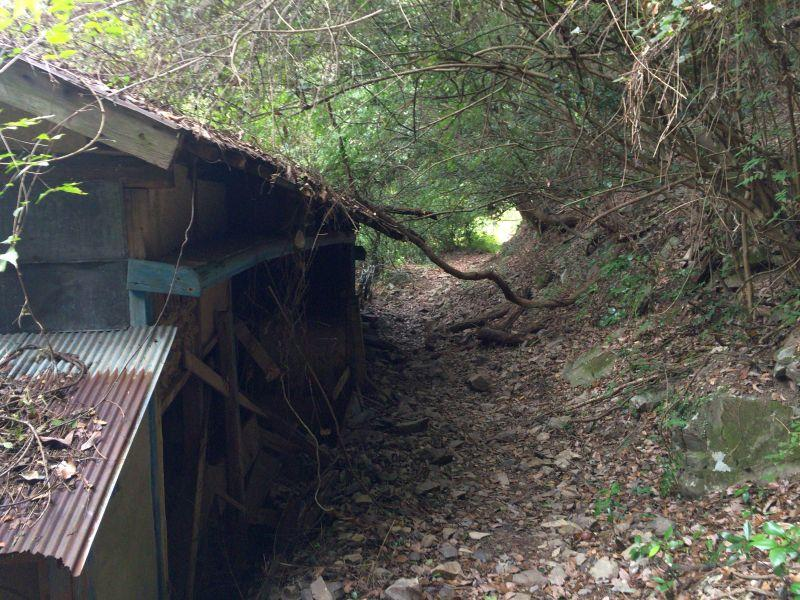
先の明るいところが 駅構内の踏切がある地点です。
つまり このお店は駅前商店。在りし日は雑貨店を営まれていたそうです。
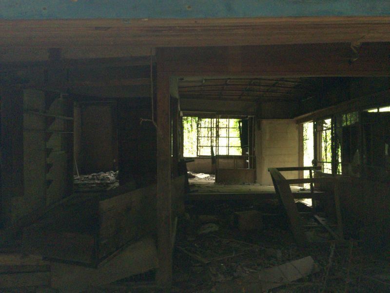
中を覗くと...
見なかったことにした方が良いかな...
こう言った 諸々のことから、坪尻駅利用・訪問は 必ず明るい時間に行った方が良いです。
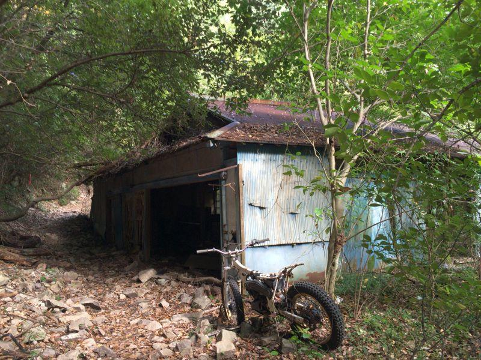
雑貨店前には、朽ちたオフロードバイクが放置されていました。ここまでどうやってこれを運んだんだろう？
いわゆる「時が止まった」状態になって久しい感じですが、人が居て商店を営まれていた時代。ここを人が離れた瞬間。もし過去を覗くことができるのであれば、坪尻駅に駅利用者がいた時代を見てみたいです。
坪尻駅到着
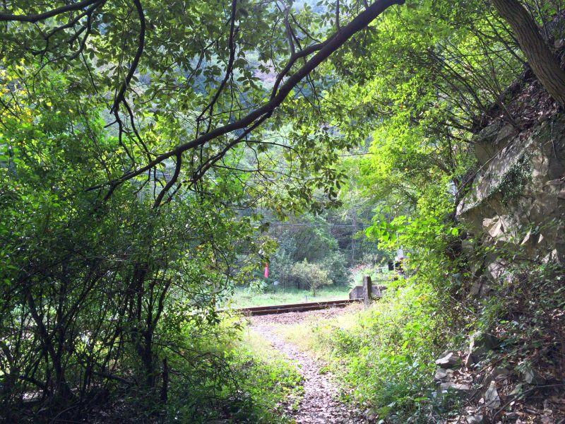
廃屋の前を足早に通り過ぎると、レールが見えてきます。いよいよ坪尻駅に到着です。
坪尻駅
< 自家用車 >
到達できません
< 公共交通機関 >
JR土讃線・坪尻駅下車
※ 列車の運転本数が少なく、通過する各駅停車もあります
※ 主な地点からの最速・最短距離
続き
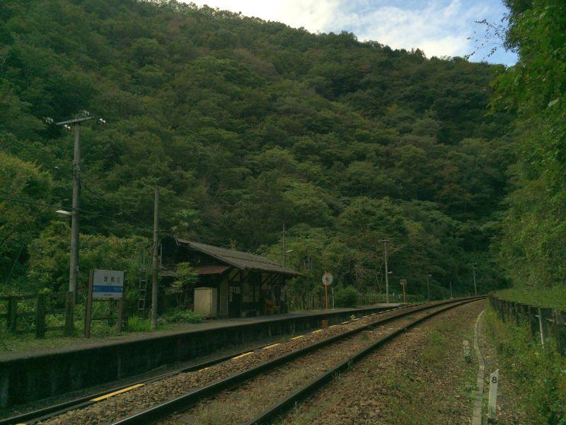
2019,6/12 徳島県山中に位置する、国内トップクラスの秘境駅・後編 < 坪尻駅・徳島県三好市池田町 >
関連記事
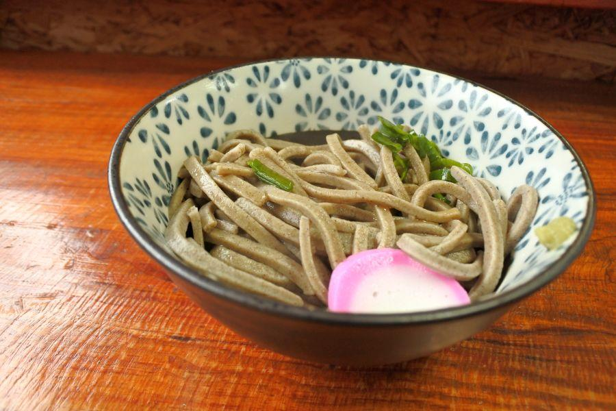
2017,10/23 手作りの田舎そばを食べに、そばやへ < そばや / 徳島県 >
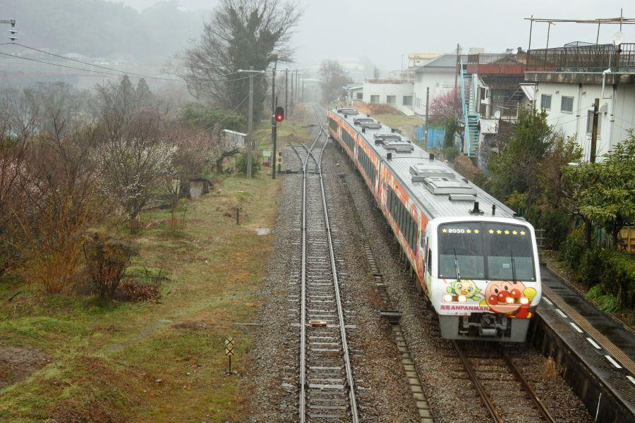
2017,11/26 四国の鉄道が繋がった瞬間を見届けた立会人 < 土讃線三縄駅 / 徳島県 >
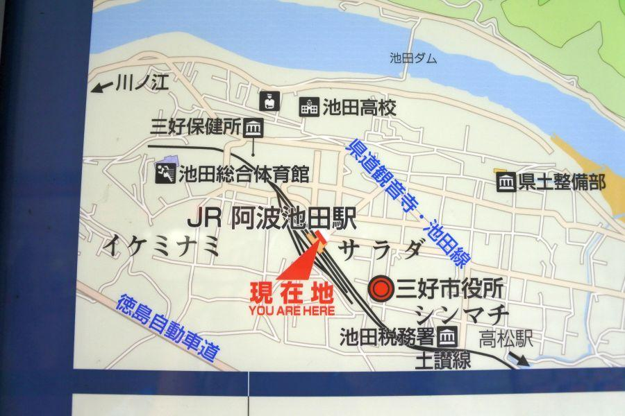
2018,1/30 やまびこ打線で一世を風靡した高校がある街の珍地名 < 阿波池田駅 / 徳島県 >
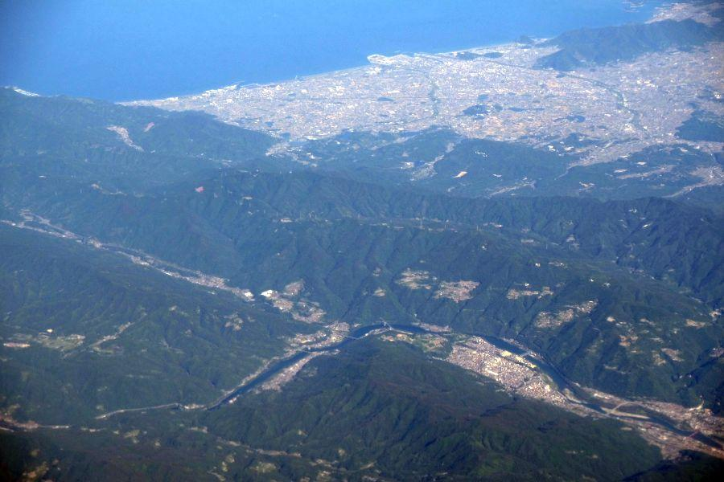
2018,5/18 空から見る香川県 < 香川県中讃・西讃ほか >
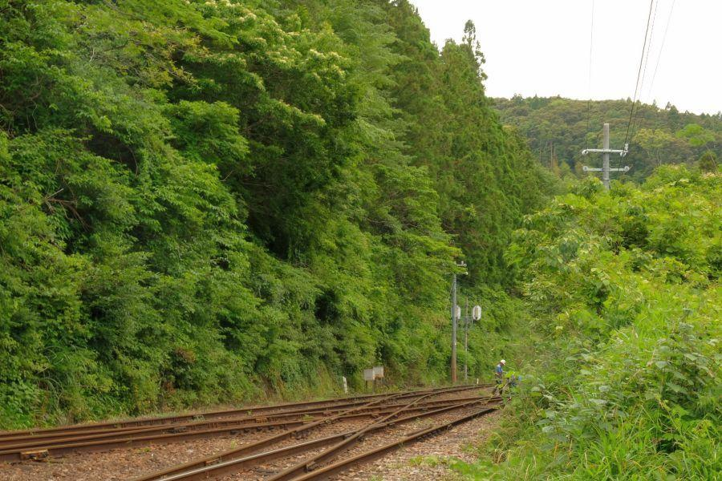
2018,6/17 各駅停車が通過する駅？ 山中のスイッチバック駅 < 新改駅 / 高知県香美市 >

2018,12/8 ユニークな駅名の高知県の鉄道交通中心地 < 後免駅 / 高知県南国市 >
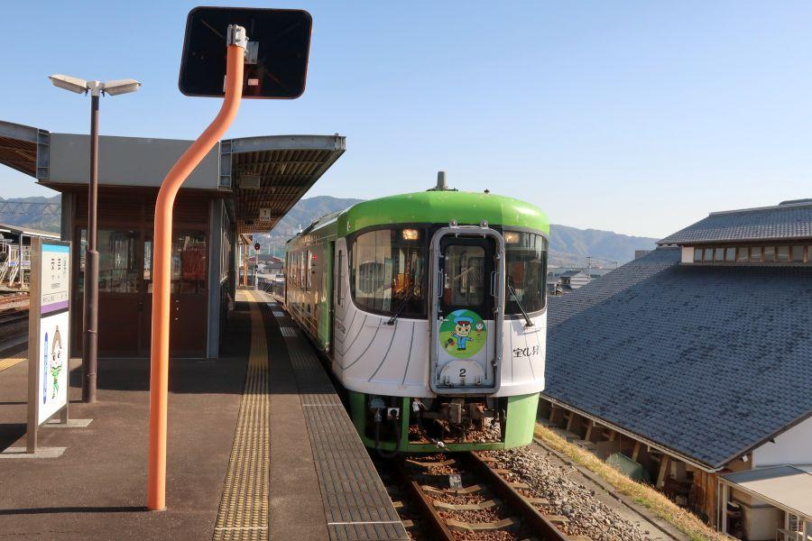
2019,1/1 雄大な太平洋を存分に楽しむことができるローカル線・前編 < ごめん・なはり線 / 高知県東部 >
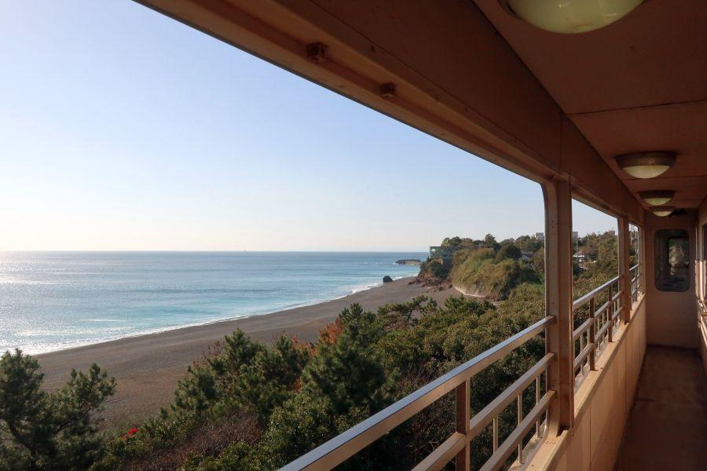
2019,1/7 雄大な太平洋を存分に楽しむことができるローカル線・後編 < ごめん・なはり線 / 高知県東部 >
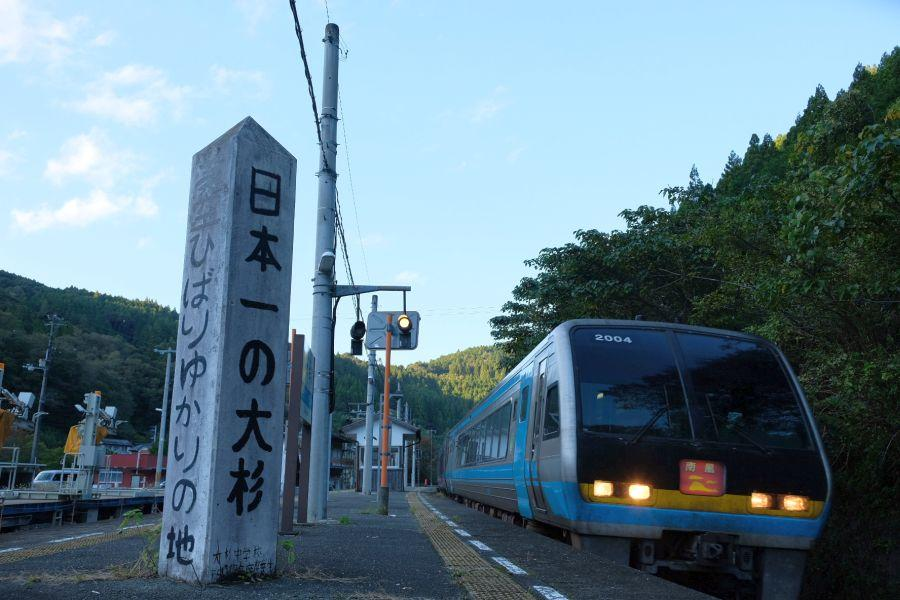